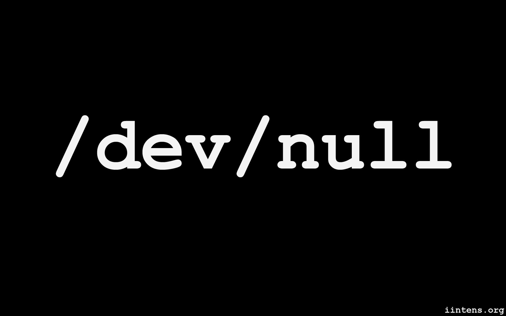

Listas de exercicios no JavaScript com o While

1 - Apresentar os resultados de uma tabuada de multiplicar (de 1 até 10) de um
número qualquer.
Atividade A
Ver mais
2 - Apresentar o total da soma obtida dos cem primeiros números inteiros
(1+2+3+4+...+98+99+100).
Atividade B
Ver mais
3 - Um programa que apresente no final o somatório dos valores pares
existentes na faixa de 1 até 500.
Atividade C
Ver mais
4 - Programa que apresenta todos os valores numéricos inteiros ímpares situados
na faixa de 0 a 20.
Atividade D
Ver mais
5 - Apresentar os resultados das potências de 3, variando do expoente 0 até o
expoente 15.
Atividade E
Ver mais
6 - Apresentar como resultado o valor de uma potência de
uma base
qualquer elevada a um expoente qualquer
Atividade F
Ver mais
7 - Escreva um programa que apresente a série de Fibonacci até o décimo quinto
termo.
Atividade G
Ver mais
8 - Apresente os valores de conversão de graus Celsius
em Fahrenheit, de
10 em 10 graus.
Atividade H
Ver mais
9 - Efetue a leitura de 10 valores numéricos e
apresente no final o total do
somatório e a média aritmética dos valores lidos.
Atividade I
Ver mais
10 -Elaborar um programa que apresente os resultados da soma e da média
aritmética dos valores
pares situados na faixa numérica de 50 a 70.
Atividade J
Ver mais
11 - Elaborar um programa que possibilite calcular a área total de uma
residência (sala, cozinha,
banheiro, quartos etc.).
Atividade K
Ver mais
12 - Elaborar um programa que efetue a leitura de valores positivos inteiros até
que um valor negativo
seja informado pelo usuário.
Atividade L
Ver mais